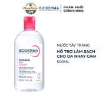
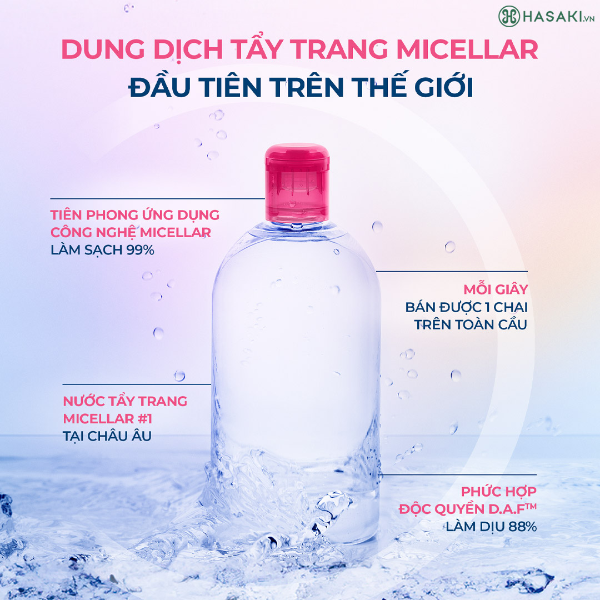
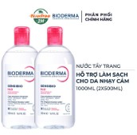

335.000 ₫
Giá thị trường: 535.000 ₫ - Tiết kiệm: 200.000 ₫ (37%)
Dung tích: 500ml
Bạn muốn nhận hàng trước 15h hôm nay (Miễn phí). Đặt hàng trong 54 phút tới và chọn giao hàng 2H ở bước thanh toán.


Sản phẩm phù hợp với loại da nào?
Đối tượng sử dụng:
Ưu điểm nổi bật:
| Barcode | 3701129812105 |
| Thương Hiệu | Bioderma |
| Xuất xứ thương hiệu | Pháp |
| Nơi sản xuất | Pháp |
| Loại da | Da nhạy cảm |
| Đặc tính | Tẩy trang, làm sạch sâu, dịu nhẹ |
Hotline: 0845628919
(Miễn phí 08-22h kể cả T7, CN)
Hướng dẫn đặt hàng
Phương thức thanh toán
Chính sách đổi trả
DANH MỤC SẢN PHẨM
Mỹ phẩm High-End
Chăm sóc cá nhân
Băng vệ sinh
Khử mùi
Nước hoa
Nước hoa nữ
Nước hoa nam